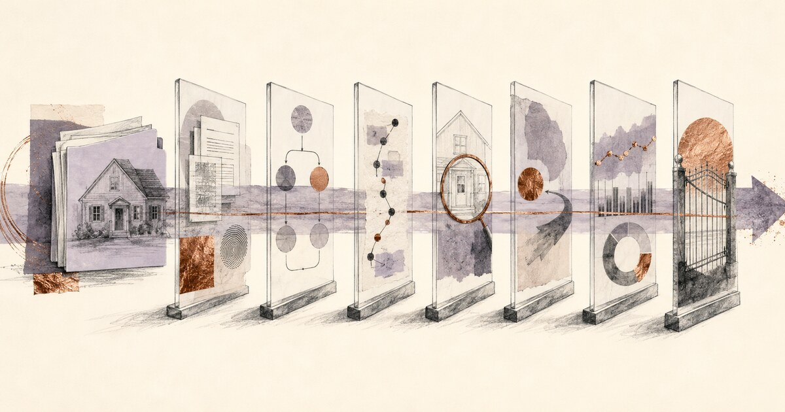

Guardian Credit Union Breach Notice Puts Three Response Clocks in Focus
Why containment, regulator reporting and member notification need separate owners and evidence.

CreditUnionAI News
Coverage of artificial intelligence regulation, fraud, operations, vendors, and strategy for credit unions.
Latest AI Newsroom Alert
Timely reporting and practical guidance for credit-union decisions.
Why containment, regulator reporting and member notification need separate owners and evidence.
Eight conditions that should stop a collections workflow and route the case to a qualified employee.
A practical release gate for AI-drafted emails, notices, chatbot answers and campaign copy.

Seven finance gates for baselining costs, risk-adjusting benefits and verifying value after launch.

Why credit unions need to trace who initiated a transfer before deciding whether a member authorized it.

A practical evidence gate for accuracy, fair lending, explanations, valuations, exceptions and rollback.
CreditUnionAI Weekly Briefing
The developments credit-union leaders need to understand, translated into practical operating implications.
A concise audio rundown on AI moves reshaping member service and back office efficiency.
A concise discussion of where AI is already improving lending, fraud prevention, member service and operations—and what credit-union leaders should do next.